相对外向，喜欢热闹，但也很需要独处的时间。
Outgoing on the whole — I like a lively room, and I still need time on my own.
和我相处的几个关键词A FEW THINGS ABOUT ME
热闹，也要独处CROWD & QUIET
相对外向，喜欢热闹，但也需要独处的时间。
Outgoing, fond of a crowd — and still in need of quiet time alone.
和人打交道WITH PEOPLE
比较善于和人打交道，认识新朋友这件事不太让我紧张。
Fairly good with people; meeting someone new doesn't make me nervous.
先试一次再说TRY IT FIRST
喜欢尝试自己有兴趣的事物，想到了就想动手试。
If something interests me, I'd rather try it than keep wondering.
吃到好吃的会幸福GOOD FOOD
吃到好吃的会很幸福，这一点很容易被满足。
Good food makes me genuinely happy — it doesn't take much.
高精力HIGH ENERGY
喜欢出去玩，是那种精力比较足的人。
I love going out — the high-energy type.
长情，也感性LONG-MEMORIED
长情又感性，对在意的人和事会比较敏感。
Loyal and sentimental; the people and things I care about move me easily.
和朋友在一起的时候AROUND FRIENDS
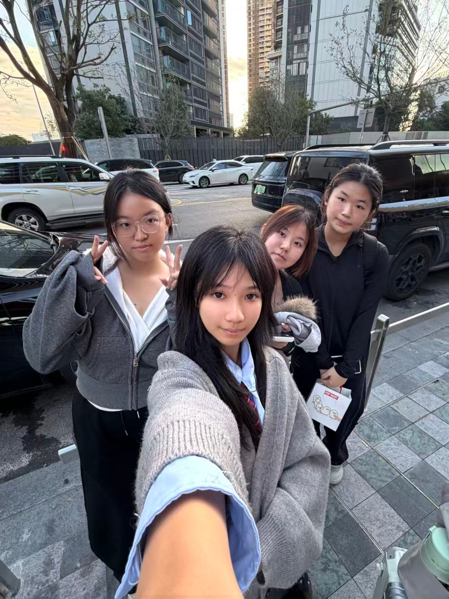
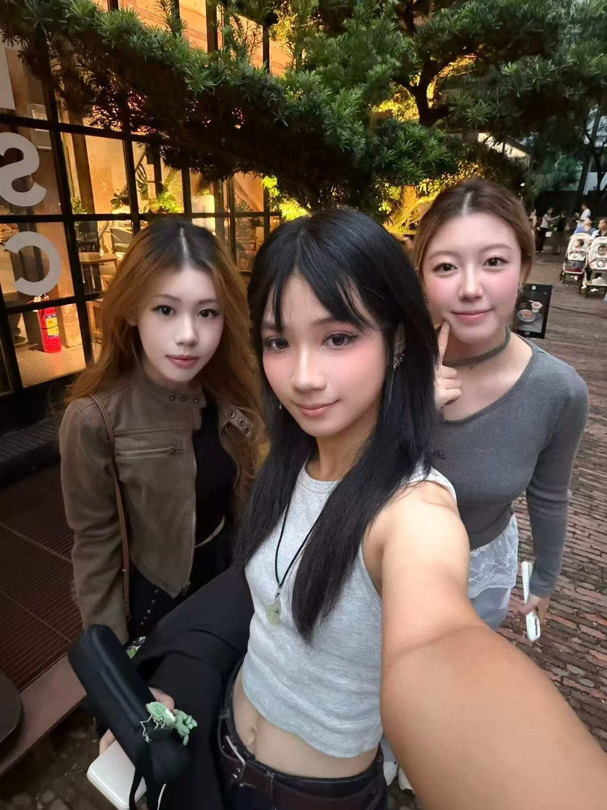
感兴趣的事有点多：跳舞、弹琴、追星、拍照、出去玩、做饭，还有看番。
Quite a few things: dancing, piano, fandom, photography, cooking — and anime.
跳舞DANCE
擅长 jazz 和 choreography
主要跳 jazz 和 choreography；也跳过一点 hiphop、breaking、locking。
Mostly jazz and choreography; also a little hiphop, breaking and locking.
Jazz
Choreography
Hiphop
Breaking
Locking
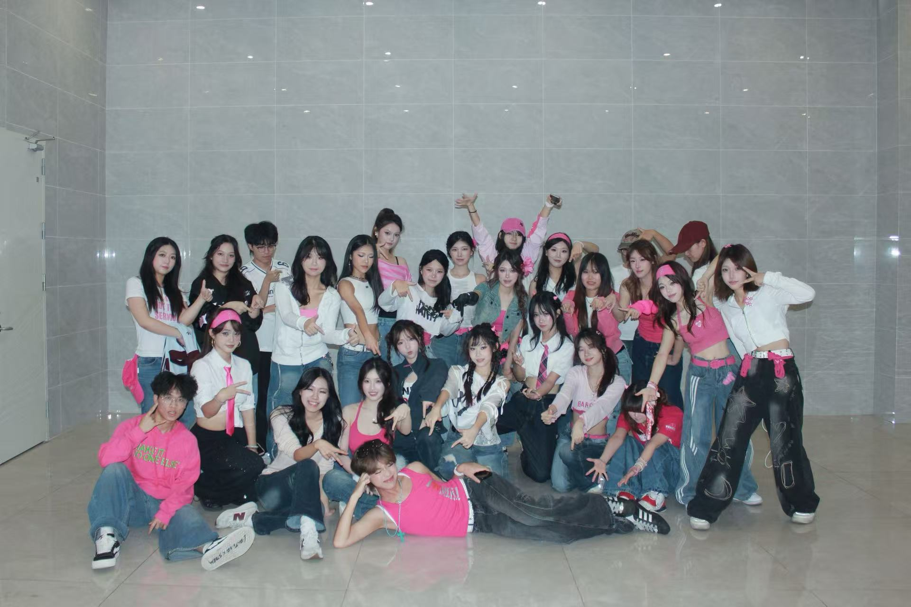
舞蹈队The dance crew
钢琴PIANO
三脚猫功夫，纯爱好
没考过级，纯属爱好；喜欢弹流行曲。
No graded exams — purely a hobby. I like playing pop songs.
为什么喜欢
不为考级，也不为表演，只是喜欢把一首流行曲完整弹下来。
Not for exams or stages — just to play a pop song from start to finish.
流行曲 / Pop songs
纯爱好 / Just for fun
追星FANDOM
内娱 · 韩娱
内娱追过线下，韩娱略知一二。
I've queued up for domestic shows in person; vaguely fluent in K-pop too.
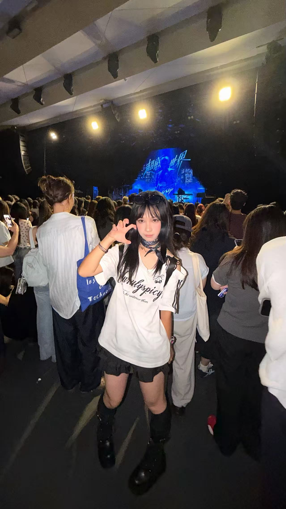
摄影PHOTOGRAPHY
不专业，拍着玩
不专业，纯粹拍着玩。喜欢拍街道、夜景和光影。
Not a professional — I just shoot for fun: streets, night views, light and shadow.
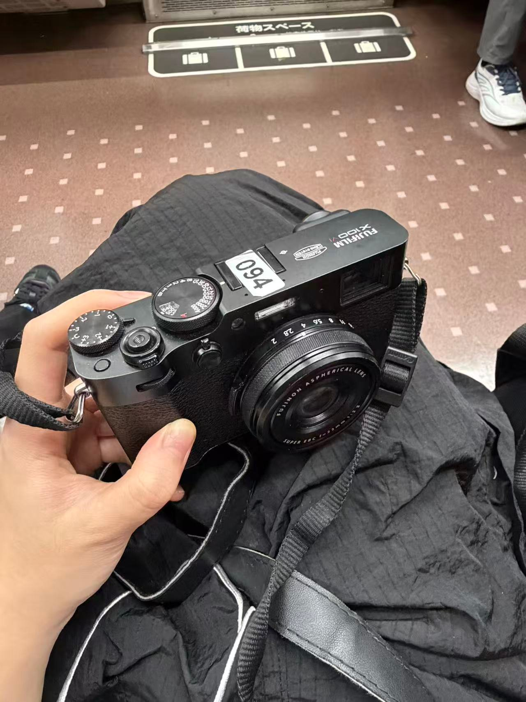
随身这台The one I carry
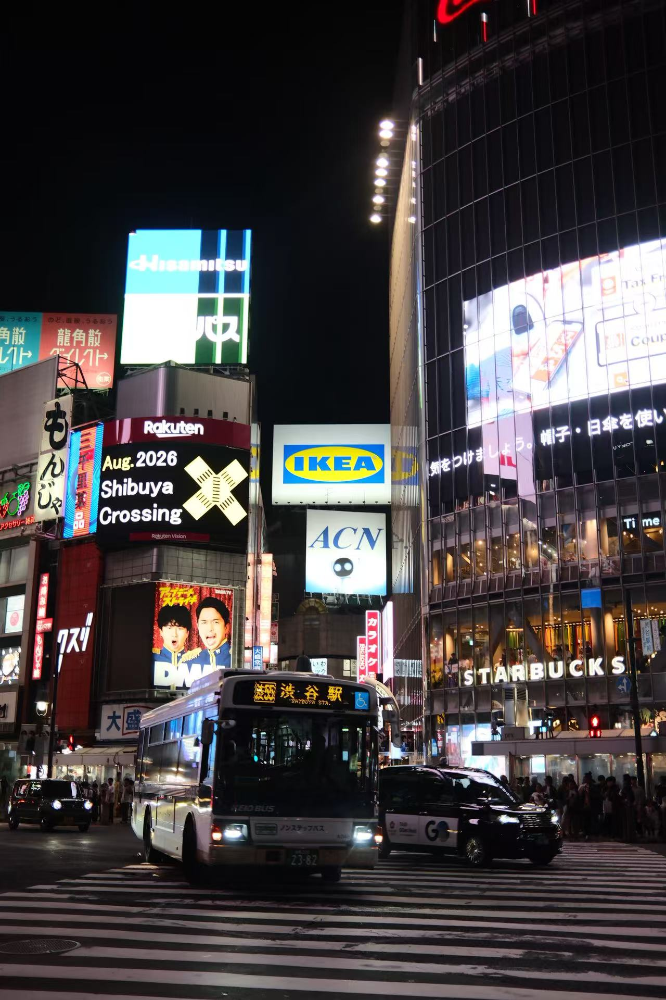
涩谷十字路口Shibuya Crossing
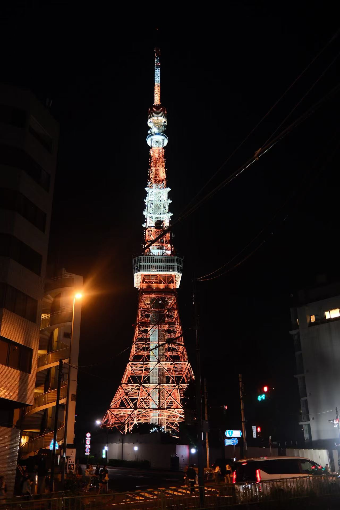
东京塔Tokyo Tower
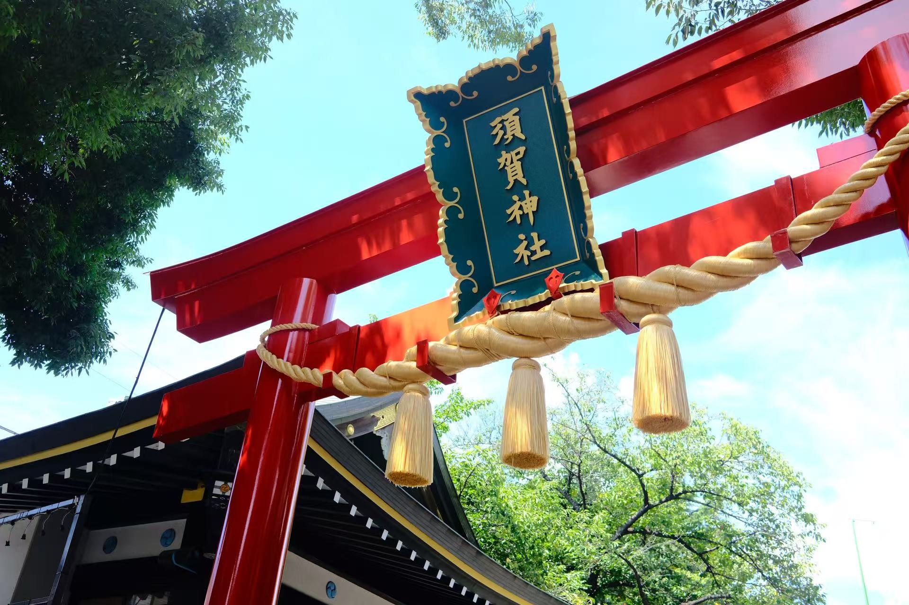
鸟居Torii
石阶和灯笼Steps and lanterns
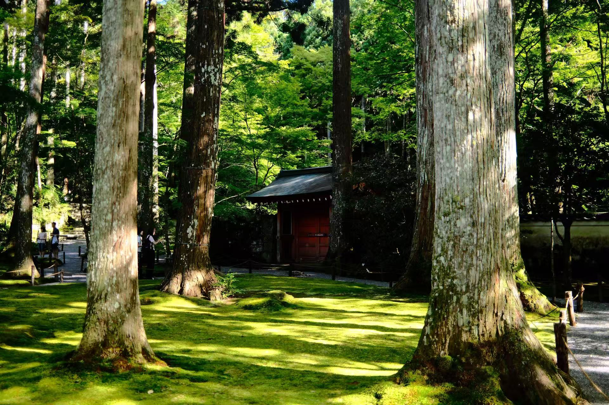
苔藓与老树Moss and old trees
旅游TRAVEL
喜欢出去玩
喜欢出去玩，看海、逛城市，去一次就能记住的地方。
I like getting out — the sea, city walks, places worth remembering.
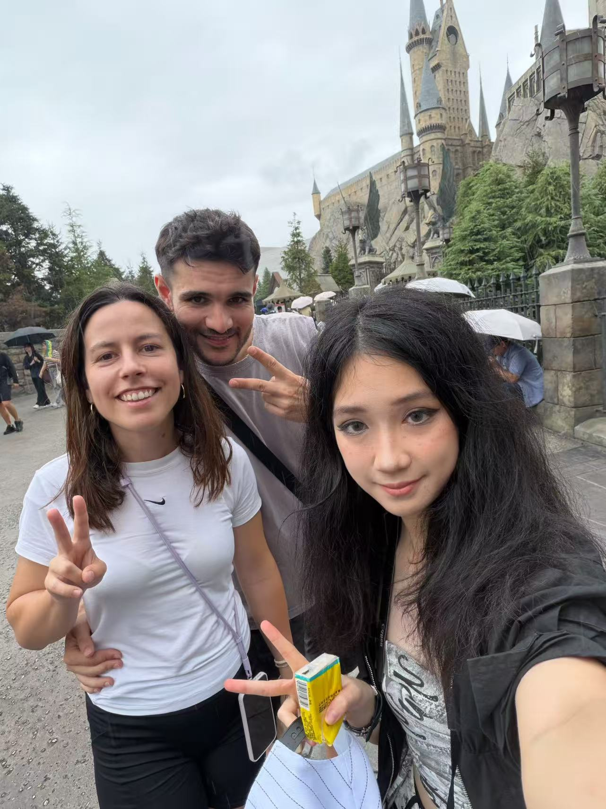
第一次去环球影城First time at Universal
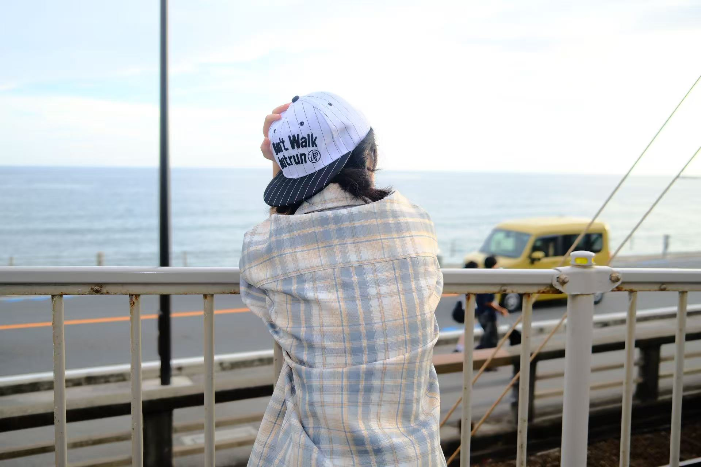
海边的风The sea wind
做饭COOKING
刚学会一点点
会一点小甜品和家常菜，最近刚开始学。
A few little desserts and simple home dishes — I only started recently.
现在的进度
甜品先从小份的做起，家常菜还在照着菜谱的阶段。
Desserts first, in small batches; home dishes still at the follow-the-recipe stage.
还在学习中 · still learning
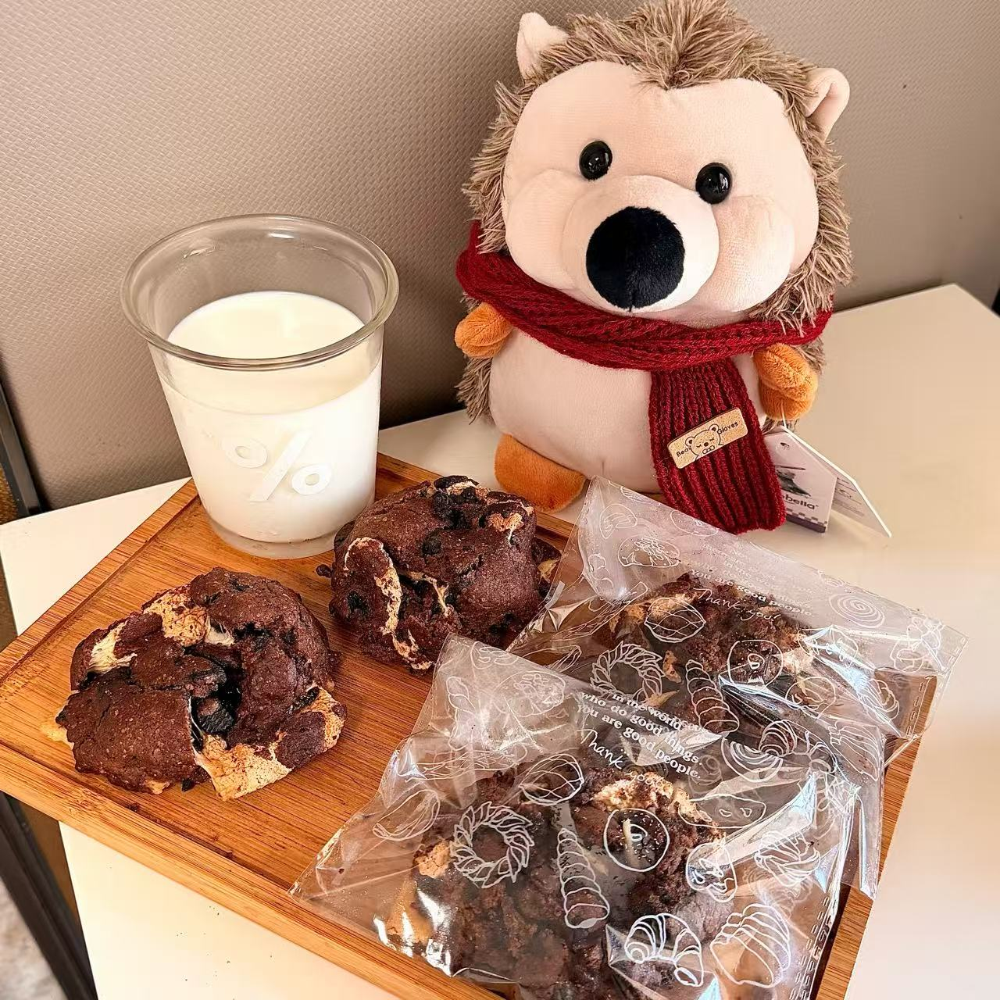
刚烤好的曲奇Freshly baked cookies
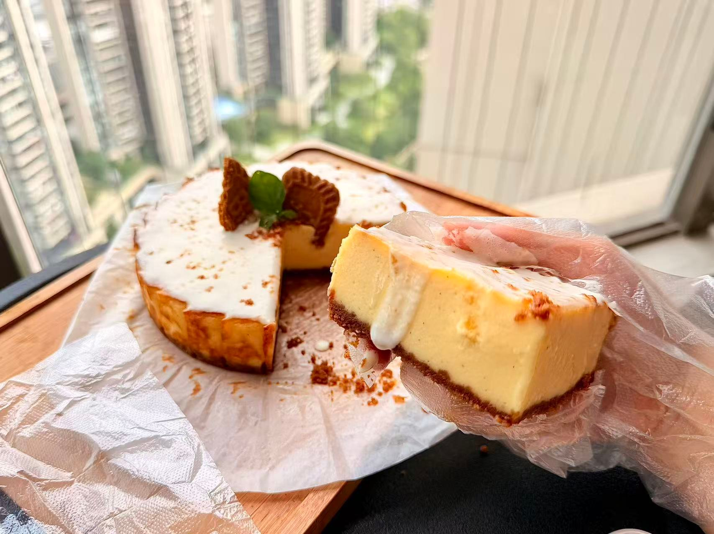
芝士蛋糕A cheesecake
动漫ANIME
看点小番
平时看点小番，喜欢故事干净、情绪细腻的那一类。
I watch a bit of anime — drawn to clean stories with delicate feelings.
与你相恋到生命尽头
冰之城墙
金牌得主
沉默魔女的秘密
莉可丽丝
败犬女主太多了
一些少女乐队番
等等…
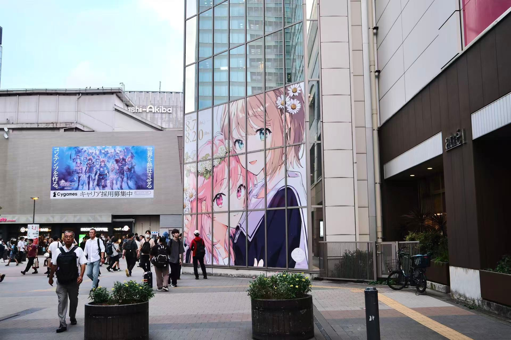
秋叶原Akihabara
前十七年大多在深圳生活；福建人，现在在广州读书。
Most of my first seventeen years were in Shenzhen; Fujianese by family, now studying in Guangzhou.
一条时间线A TIMELINE
学府小学 · 学府中学PRIMARY & JUNIOR HIGH
小学和初中都在学府。
深圳第二外国语学校SENIOR HIGH
高中在深圳第二外国语。
广东工业大学UNIVERSITY
大学在广东工业大学，现在读。
和父母、爷爷一起生活AT HOME
家里和父母、爷爷一起生活。
住过的地方WHERE I'VE LIVED
在南山住过十六年，后来先后搬到宝安、龙华、光明。最喜欢南山。
Sixteen years in Nanshan, then Bao'an, Longhua and Guangming. Nanshan is still my favourite.
南山 · 16 年
→
宝安
→
龙华
→
光明
一些存档SOME SNAPSHOTS
校服的那些年The uniform years
我们的班Our class
晚自习后的合影After evening study
拍立得A Polaroid
这一段还在补写 · this part is still being written
现在对游戏行业感兴趣，但不给自己设限。
The game industry interests me right now — but I'm not closing any doors.
想做的事WHAT I WANT
游戏行业GAME INDUSTRY
目前感兴趣游戏行业，但不设限。
Interested in games for now — without ruling anything else out.
不设限 / open
回深圳BACK TO SHENZHEN
想回深圳，找一份可以做很久的工作。
I'd like to go back to Shenzhen and find work I can stay in for a long time.
大概率读研GRAD SCHOOL
大概率会读研。
Most likely going on to a master's.
四年·看一看世界FOUR YEARS, MORE WORLD
大学四年，想多完成一些自己的未完成，也多看看世界。
In these four years I want to finish more of my unfinished things — and see more of the world.
自律，也松弛DISCIPLINED, RELAXED
想成为一个自律、但学会松弛的人。
I want to become someone disciplined who has also learned to relax.
清楚，然后争取KNOW & GO GET IT
明白自己要什么，然后勇敢去争取。
To know what I want, and then go after it bravely.
还没写下来的部分STILL BLANK
这一页会一直更新——想到什么，就补一条。
This page keeps updating. Whenever something comes to mind, I add a line.
更新中 · updating